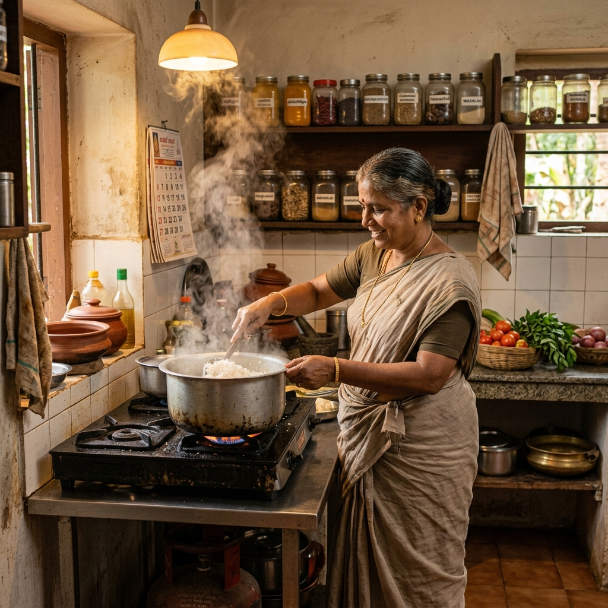
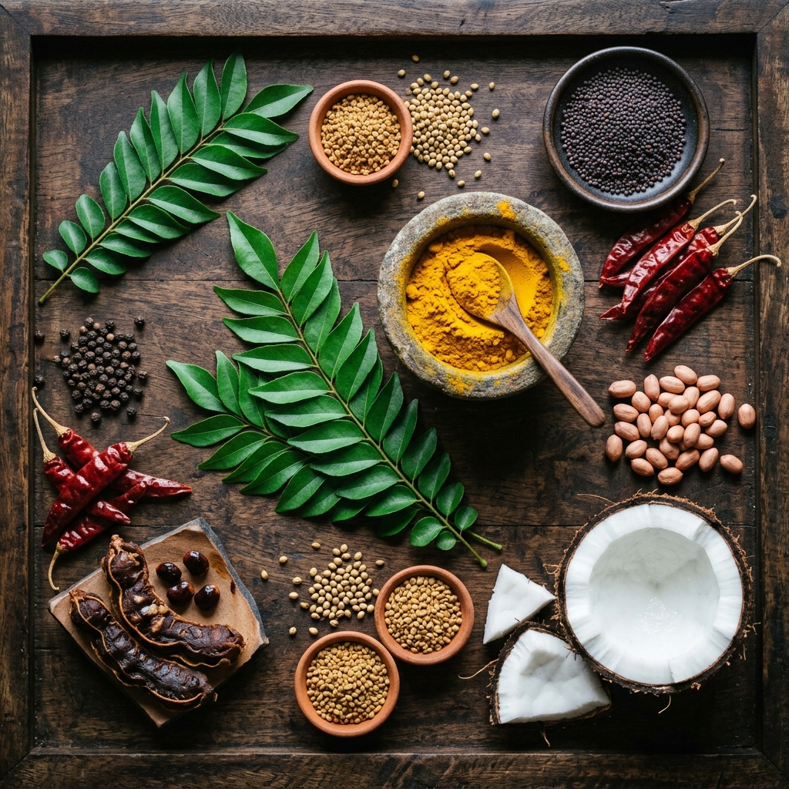

From a humble home kitchen to Salem's favorite cloud kitchen — our passion for authentic South Indian flavors drives everything we do.
The Rice Heritage was born out of a simple desire: to bring the comforting, authentic, and deeply flavorful rice dishes of traditional South Indian homes to the modern, fast-paced world.
Operating as a premium cloud kitchen, we focus entirely on quality, hygiene, and taste. We use slow-roasted spices, farm-fresh ingredients, and traditional stone-ground techniques to prepare our base masalas.
Whether you are a bachelor missing home, a corporate team seeking a delicious lunch, or someone who simply loves pure, vegetarian comfort food — we cook for you with the same love and precision as a home kitchen.

Every dish is prepared with the same care and affection as cooking for our own family.
FSSAI certified kitchen with strict hygiene protocols and regular quality audits.
Dedicated 100% vegetarian kitchen. No compromises on purity, ever.
We understand the value of your time. Punctual delivery is our promise.
Started experimenting with family recipes in a small home kitchen, perfecting each variety rice dish.
Officially launched The Rice Heritage on Zomato & Swiggy. Received our first 100 orders within the first week!
Partnered with 50+ corporate offices in Salem for daily lunch deliveries and event catering.
Crossed 5,000 meals delivered with a 4.8-star average rating. Expanded our menu to 6 signature dishes.

We believe great food starts with great ingredients. Every element in our kitchen is carefully sourced for authenticity and freshness.